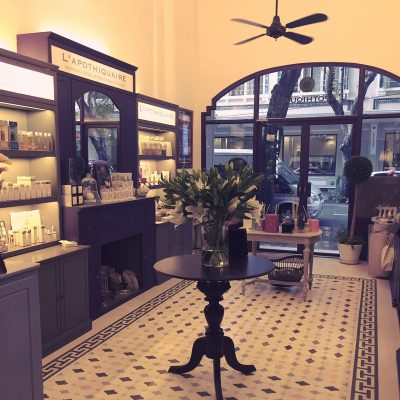

La Maison de L’Apothiquaire Spa Saigon
Le Boudoir de L’Apothiquaire
La Maison de L’Apothiquaire spa offers a wide selection of services, including wonderful facial massages and body care treatments which use natural, organic products. Our Haute Couture spa packages are designed not only to pamper but also to provide tangible therapeutic benefits to soothe the mind and body. A visit to L’Apothiquaire spa starts with an in-depth skin analysis by one of our experienced beauty consultants. We will design a specific treatment to suit your individual needs using precious natural skincare products made only in small batches from France. Your skin is noticeably transform after just one treatment.
L’Apothiquaire skincare products are a blend of fresh plant extracts and organic essential oils which provide natural remedies for the skin. La Maison de L’Apothiquaire also has a fitness centre for Pilates, Yoga, Belly Dance and Zumba. Aqua-aerobics lessons are offered in the sparkling mosaic-tiled swimming pool and their outdoor dining terrace provides perfect surroundings in which to enjoy one of the delicious meals meticulously prepared in-house.
If beauty and wellness is about pleasing our ethereal senses, then L’Apothiquaire is the place for you. La Maison de L’Apothiquaire flagship venue is tucked away at the end of a tranquil tree-lined path, a sanctuary of scents, natural healing and relaxation. Entering the grounds you are immediately enveloped in the sense of serenity offered by a lovingly restored French villa with a charming tropical garden with water fountains, warmly-lit chandeliers, plush chairs and velvet curtains. It’s about relaxation and aesthetics.
La Maison de L’Apothiquaire has twenty three treatment rooms and suites, each beautifully decorated. Tasteful antiques are displayed discreetly throughout the spa. The suites have old-fashioned claw-bathtubs, jacuzzi and private showers. The overall ambience is one of discreet indulgence. The owners of L’Apothiquaire are passionate in their belief that touch, relaxation and natural remedies are the best ways to restore health and beauty. The spa is aptly named after the 17th century apothecary – a herbalist, scientist and sorcerer who was notable for having miraculous remedies for health and beauty concerns.
The original L’Apothiquaire spa branch is ideally situated in downtown Ho Chi Minh City, close to the main hotels and offering the perfect urban sanctuary and spa. Housed in a quaint, lovingly restored century-old French townhouse, L’Apothiquaire spa features high ceilings and original tilling. The antique furniture enhances the old world charm which transports you away from the hectic pace of modernity. Upon entering, L’Apothiquaire spa is a boutique with traditional wooden cabinets resembling a 17th century French Apothecary. Along the cabinets is an array of the comprehensive range of L’Apothiquaire’s beautifully packages organic body and face oils, scrubs, bath salts, organic soaps and organic herbal blends, from France. Treatments and massages follow the L’Apothiquaire philosophy of using only the finest, natural and organic ingredients to offer a delicate but effective healing process for mind and body. Trained beauty consultants will put you at ease, tailor a treatment to suit your individual needs and recommend an going program to ensure your renewed radiance is maintained. L’Apothiquaire Artisan Beaute opened in 2005 and was voted ‘Best Beauty Salon’ in the same year. It offers the ultimate in body care and facials, a unique experience not to be missed.